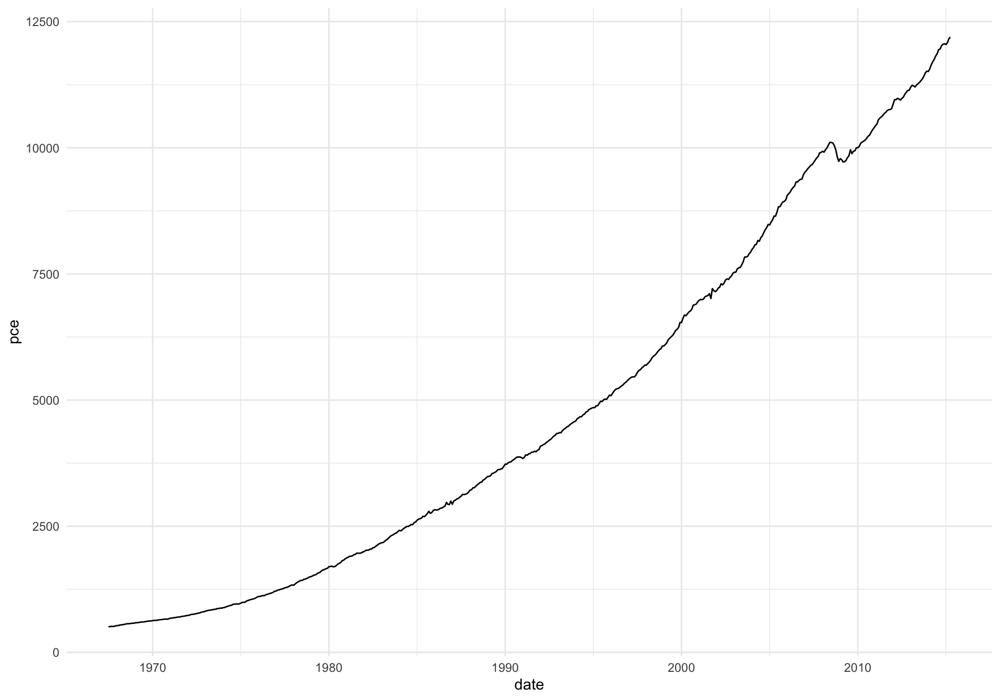
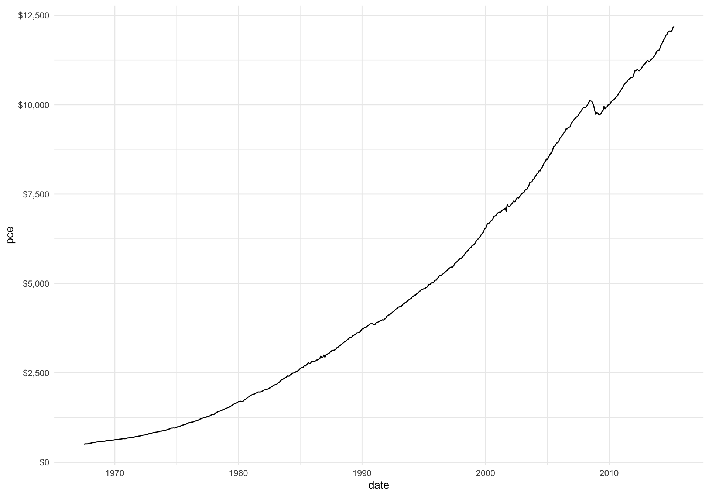
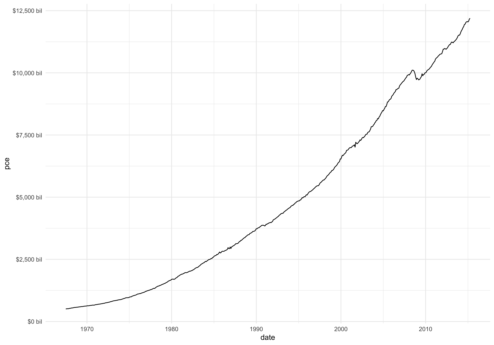
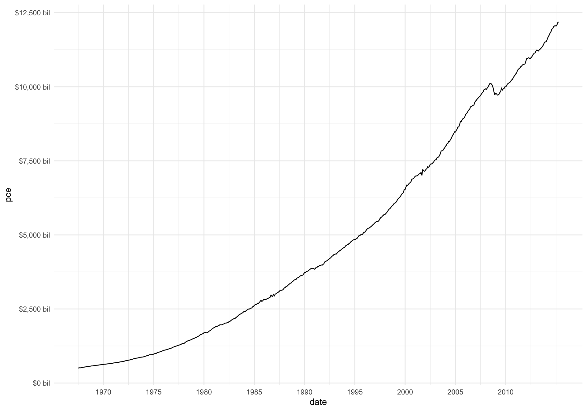
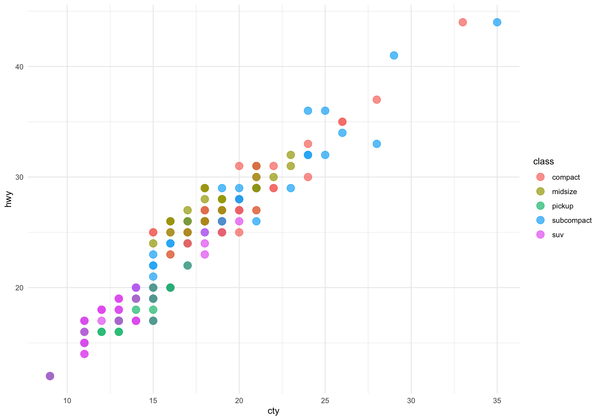
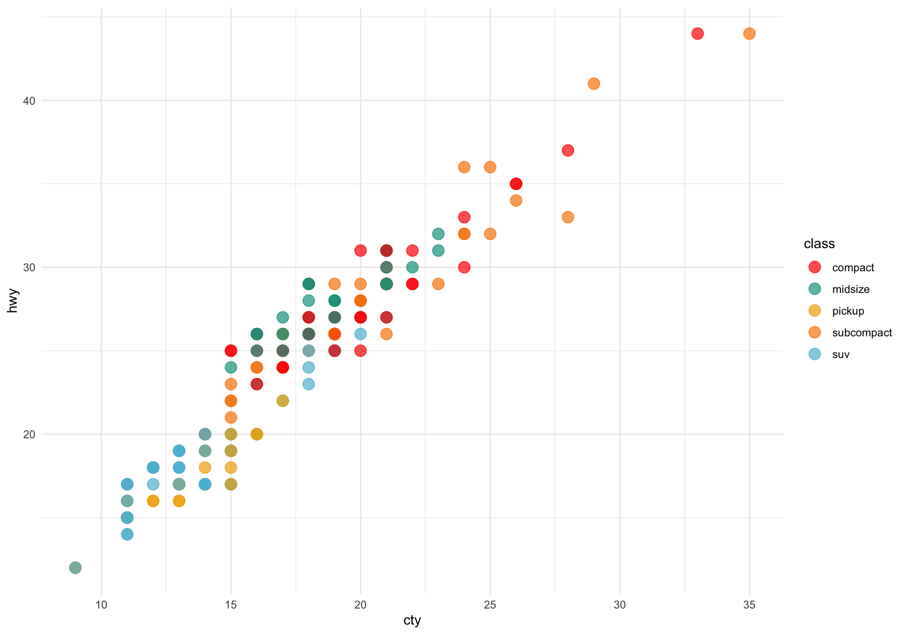
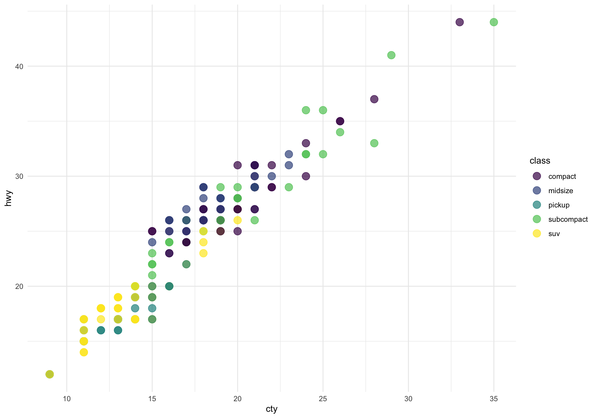
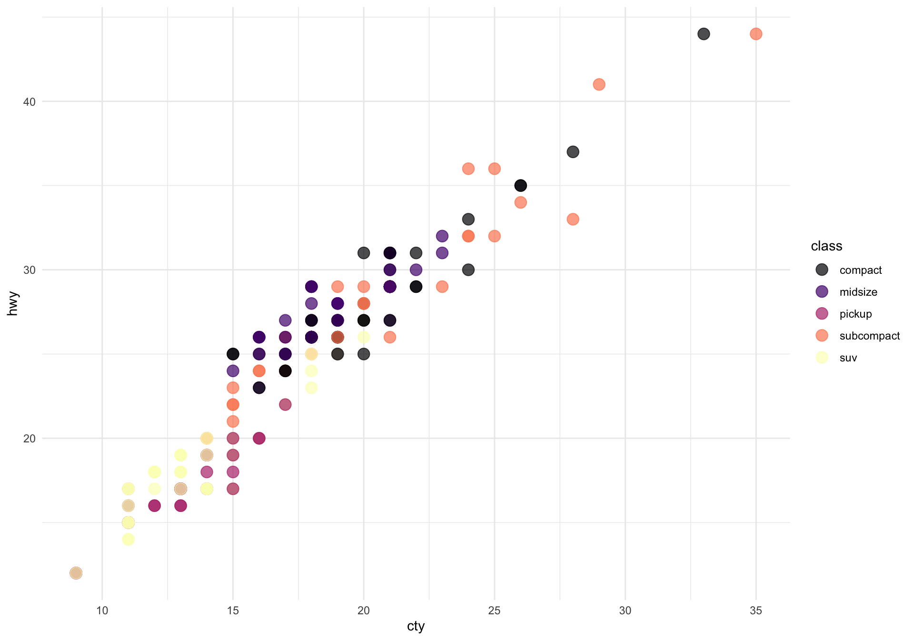
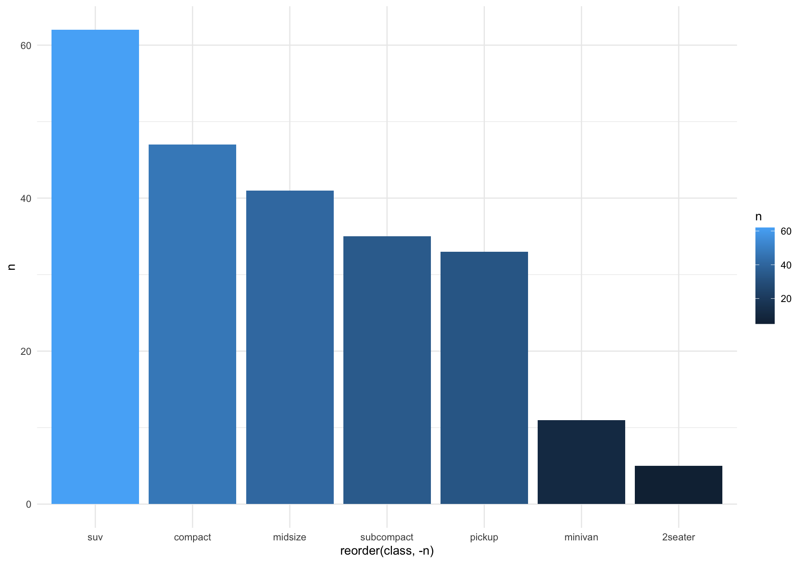
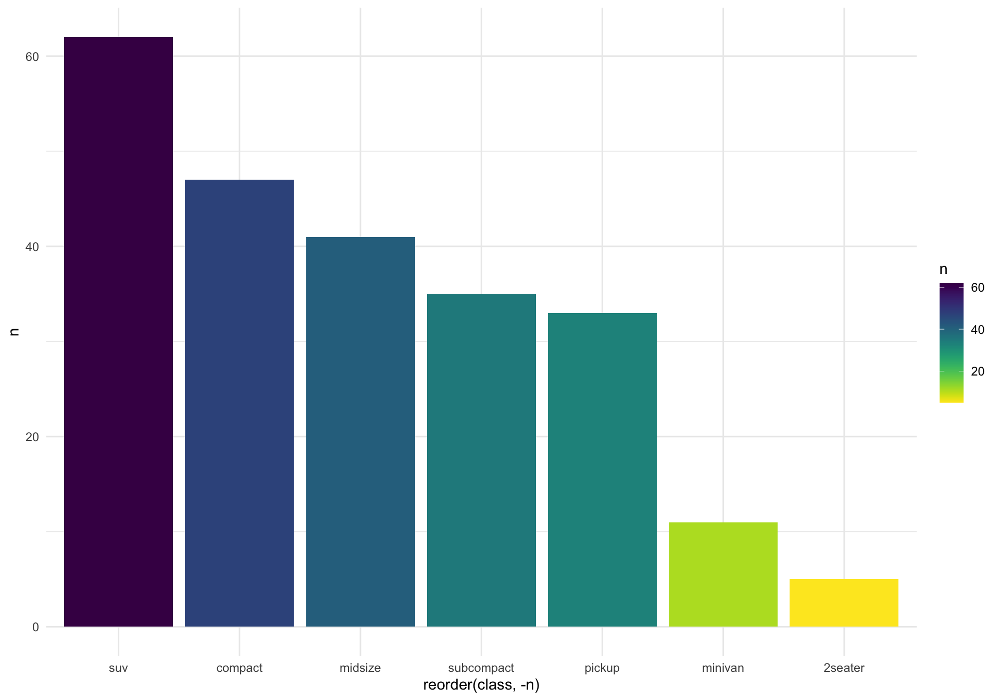

Scales
10/4/2022
Note the output. Here, I used a new package called
cleanrmd. This allows us to change the themes in the output
HTML. Read more about it here: https://pkg.garrickadenbuie.com/cleanrmd/
Install it by running the following command in the console. install.packages(‘cleanrmd’) You don’t have to call this library explicitly.
Installing and/or loading multiple packages simultaneously
Install package pacman by running the following command
in the console. Don’t run it in any R chunk below!
pacman enables installing and loading multiple packages
in one shot.
install.packages(“pacman”)
In this code, I will focus on a few common uses of
scale_*_* functions.
Changing the axis labels
We will use economics data set which comes bundled with
ggplot2. Here is the variable description:
A data frame with 574 rows and 6 variables:
date - Month of data collection pce - personal consumption expenditures, in billions of dollars pop - total population, in thousands psavert - personal savings rate uempmed - median duration of unemployment, in weeks unemploy - number of unemployed in thousands
head(economics)## # A tibble: 6 × 6
## date pce pop psavert uempmed unemploy
## <date> <dbl> <dbl> <dbl> <dbl> <dbl>
## 1 1967-07-01 507. 198712 12.6 4.5 2944
## 2 1967-08-01 510. 198911 12.6 4.7 2945
## 3 1967-09-01 516. 199113 11.9 4.6 2958
## 4 1967-10-01 512. 199311 12.9 4.9 3143
## 5 1967-11-01 517. 199498 12.8 4.7 3066
## 6 1967-12-01 525. 199657 11.8 4.8 3018p1 <- economics %>%
ggplot(aes(x = date, y = pce)) +
geom_line()
p1
Add dollar prefix to the Y axis labels
p1 +
scale_y_continuous(labels = scales::dollar)
Add dollar prefix to the Y axis labels and “bil” suffix
p1 +
scale_y_continuous(labels = scales::dollar_format(prefix = "$", suffix = " bil"))
Change the breaks on the X axis to 5 year intervals.
p1 +
scale_y_continuous(labels = scales::dollar_format(prefix = "$", suffix = " bil")) +
scale_x_date(breaks = as.Date(paste0(seq(1970, 2010, 5), "-01-01")),
labels = lubridate::year)
Change the default color palette
For colors, it is better to use mpg data set because it
has many categorical variables. Here I am filtering out observations
with 2seater and minivan because the color
palettes used in wesanderson package has usually 5 distinct
colors. So it becomes easier for me to demonstrate the use of the scale
function with 5 distinct categories of class.
p2 <- mpg %>%
filter(!class %in% c("2seater", "minivan")) %>%
ggplot(aes(x = cty, y = hwy, color = class)) +
geom_point(size = 4, alpha = 0.7)
p2
We will use scale_color_manual() to change the colors
manually.
wesanderson package
This package is based on the colors used in Wes Anderson movies: https://github.com/karthik/wesanderson The package developer Karthik Ram is one of the most productive and talented R developers.
p2 +
scale_color_manual(values = wes_palette("Darjeeling1"))
Play with other color palettes.
viridis color palette
viridis is a collection of colorblind-friendly
color palettes
Its developer Bob Rudis is a
cybersecurity expert, but he is also a fantastic R developer with
several packages under his belt. Check out the viridis
vignette: https://cran.r-project.org/web/packages/viridis/vignettes/intro-to-viridis.html
p2 +
scale_color_manual(values = viridis(5))
Bob has also added scale functions to directly use these colors.
p2 +
scale_color_viridis(discrete=TRUE)Pick different palettes using option argument inside
scale_color_viridis()
option - A character string indicating the colormap option to use. Four options are available: “magma” (or “A”), “inferno” (or “B”), “plasma” (or “C”), “viridis” (or “D”, the default option) and “cividis” (or “E”).
p2 +
scale_color_viridis(option = "A", discrete=TRUE)
Let’s take one last example with a continuous color scale.
p3 <- mpg %>%
count(class) %>%
ggplot(aes(x = reorder(class, -n), y = n, fill = n)) +
geom_col()
p3
p3 +
scale_fill_viridis(direction = -1)